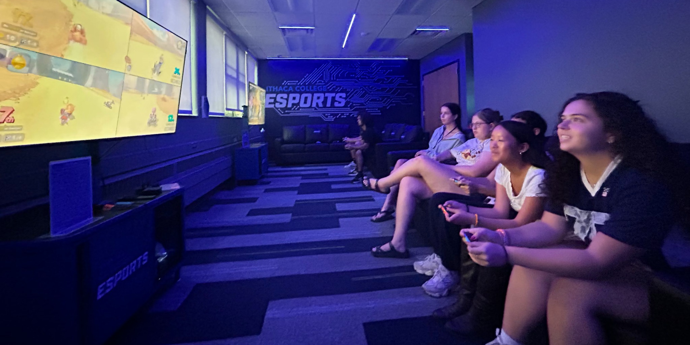
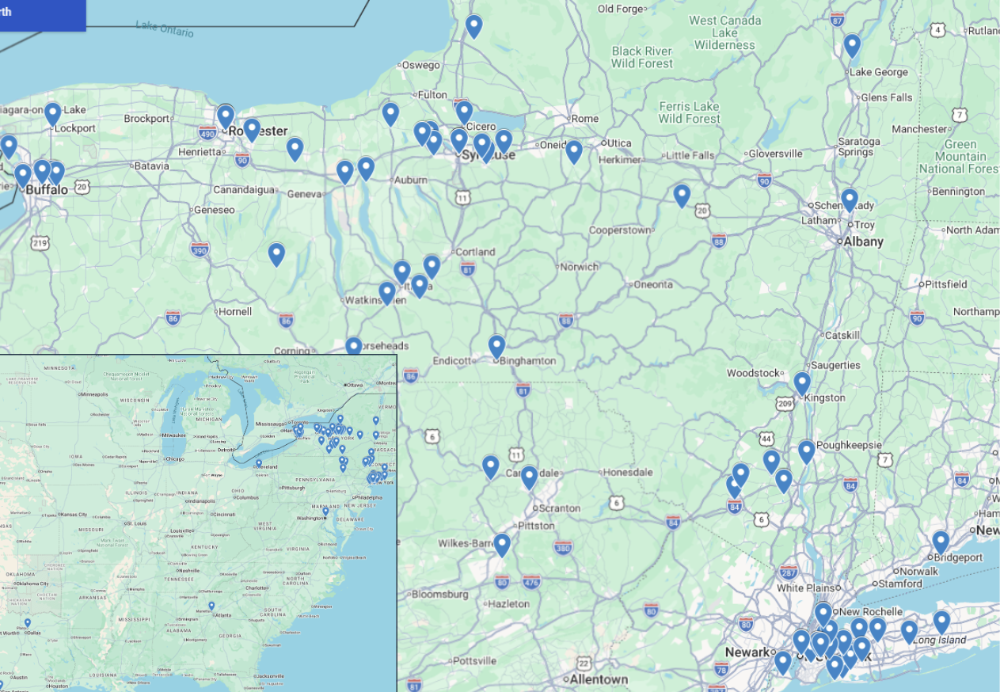

Tech Innovation Summer Academy (TISA)
TISA is a program designed specifically by the Ithaca College Computer Science faculty Toby Dragon and John Barr to help anyone and everyone get excited about technology. Rising high school sophomores, juniors, and seniors spend a week in a highly interactive learning environment to explore the ways in which technology is used across many disciplines. Ithaca College computer science faculty and current students guide hands-on activities to introduce a variety of technology-related subjects where computer programs interact with the real world, such as game development, robotics, website design, virtual reality, and artificial intelligence.
Interested in joining us? Visit the official TISA website for information about upcoming sessions and how to apply. We hope to see you there.

In the Words of Past Participants
- “Instead of being scared to code or uninterested, I was able to discover how fun technology and computer science topics could be, and find its relevance in all kinds of applications.”
- “It made me more interested in the communications field and game design.”
- “This class did change my outlook on technology because I now know more of how it works and more of the components within it.”
- “I didn't know I would be so interested. I loved learning about coding, AI, VR, and so much more.”
- “It made me think about all the processes put into making other devices and the different ways technology can be used.”
- “This program definitely gave me a new perspective on technology and computer science. I think that it is something I could see myself doing in the future as a career.”
